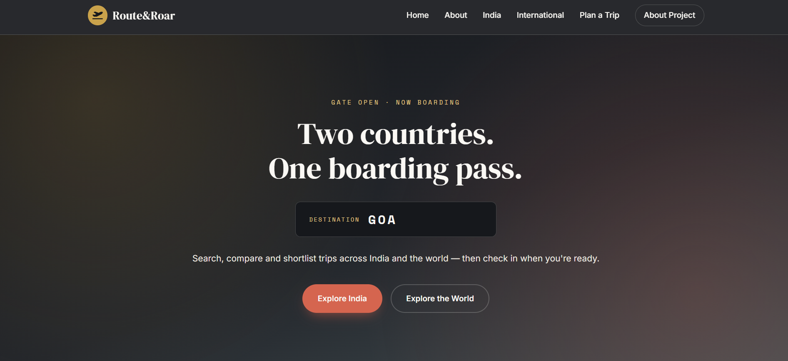
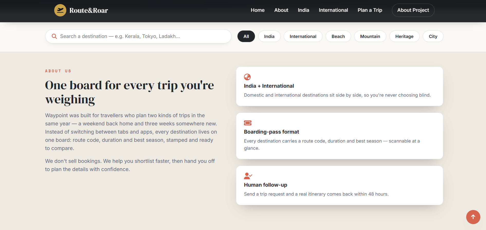
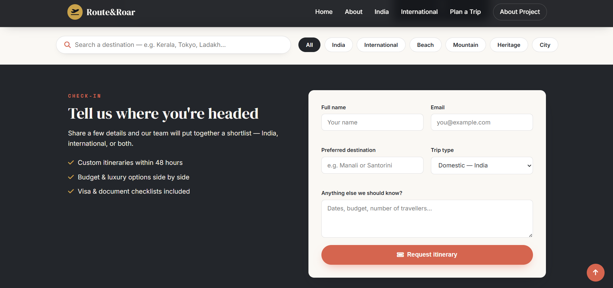
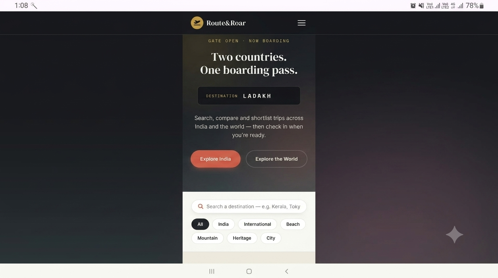

PROJECT DOCUMENTATION
Everything about how Waypoint was planned, built and deployed for the Frontend Web Development Competition 2026.
A responsive travel discovery website covering both domestic (India) and international destinations.
Destination showcase with search, filters and a trip-request form.
Travellers usually juggle separate sites for domestic and international trip planning. There was no single, visual, easy-to-browse place to compare both side by side.
Travel is a category where design, imagery and interactivity genuinely improve decision-making — making it an ideal way to practise responsive layouts, JavaScript filtering, animation and form handling on a problem people actually face.
Waypoint is a fully responsive travel website built with HTML5, CSS3 and vanilla JavaScript. The site's purpose is to give travellers a single, visually engaging place to explore curated destinations across India and around the world, compare them at a glance, and submit a trip request without leaving the page.
The target users are young, mobile-first Indian travellers who plan both domestic getaways and international holidays and want a quick, browsable shortlist before committing to a booking platform. Every destination is presented as a "boarding pass" card carrying route code, duration and best-time-to-visit information, which ties the visual language directly to the travel theme.
Key features include a live search bar, category and region filters (India / International / Beach / Mountain / Heritage / City), an animated departure-board hero section, scroll-triggered reveal animations, animated statistics counters, and a validated trip-request form that stores the visitor's last submission in the browser's local storage for convenience. The site is built mobile-first and tested across phone, tablet and desktop breakpoints.
Future improvements under consideration include user accounts, live pricing via a travel API, an admin dashboard for adding destinations, and integrated online payments for booking.
| Full Name | Roll No. | Department | Year | |
|---|---|---|---|---|
| Ankitha N | 1SP23EC005 | ECE | 4th Year | ankithanachar2020@gmail.com |
| Eshwari Naik | 1SP23EC013 | ECE | 4th Year | eshwarisnaik@gmail.com |
Getting the boarding-pass cards and departure-board hero to hold their layout from mobile to desktop required extensive breakpoint testing and CSS Grid adjustments.
Combining region filters, category filters and live search without conflicts took a few iterations of the JavaScript filtering function.
Balancing clear error messages with a clean form design was solved by adding inline, field-level validation instead of a single alert.
Initial GitHub-to-Vercel deployment issues were resolved by double-checking file paths and repository structure.
The Frontend Web Development Training gave us a strong, practical foundation in HTML, CSS and JavaScript. The hands-on sessions and real-world examples made it easy to understand how to structure a website, style it responsively, and add interactivity. Building this project end-to-end — from layout to deployment — was the most valuable part of the training, since it forced us to apply every concept together instead of in isolation.
We appreciated the guidance on Git/GitHub workflow and Vercel deployment, which are skills we hadn't used before. One suggestion for improvement would be a few more sessions dedicated to debugging responsive layout issues, as that was where our team spent the most time. Overall, it was a rewarding, confidence-building experience.




We hereby declare that this project was developed by our team specifically for the Frontend Web Development Competition 2026. The work submitted is original, and we have not copied any complete project or template from online sources. External resources used (fonts, icons, images) have been credited above.